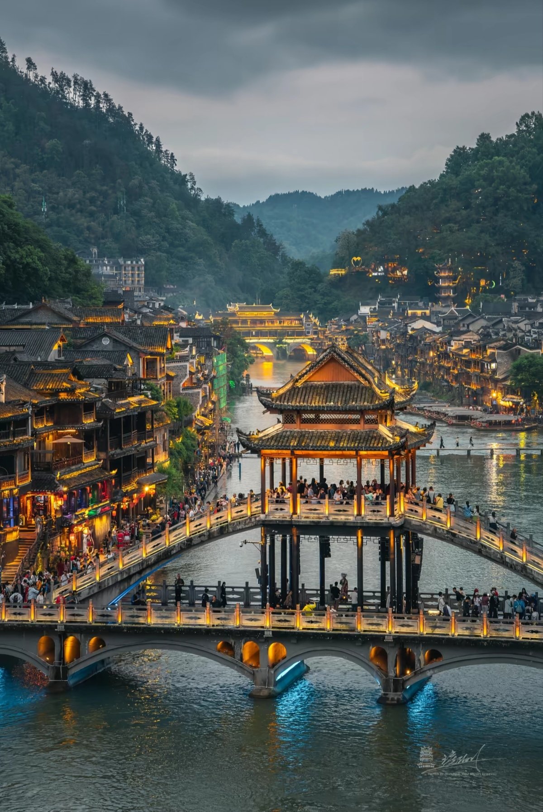
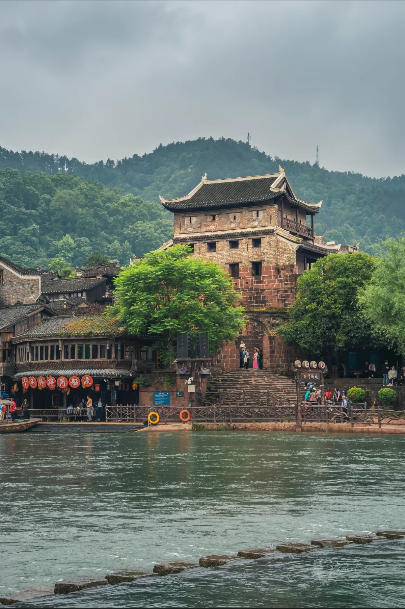
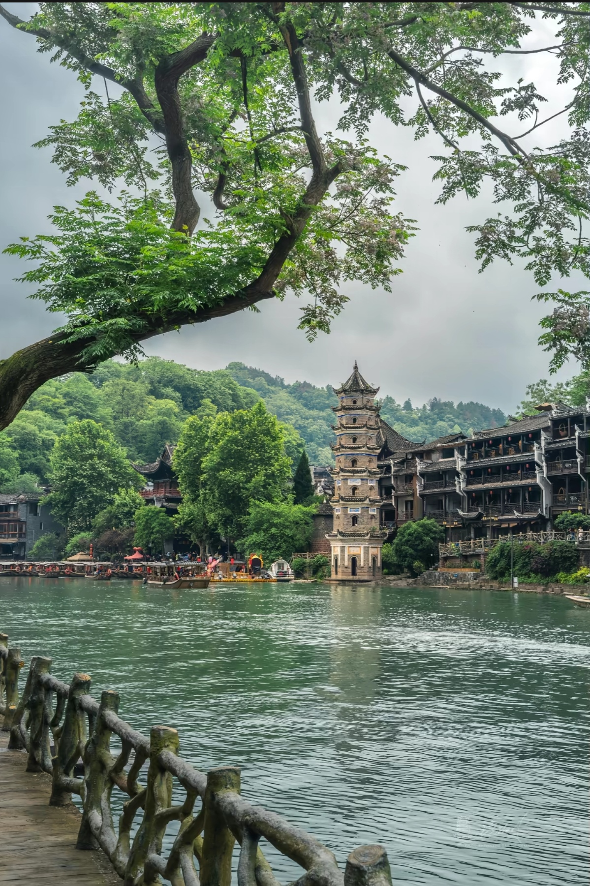
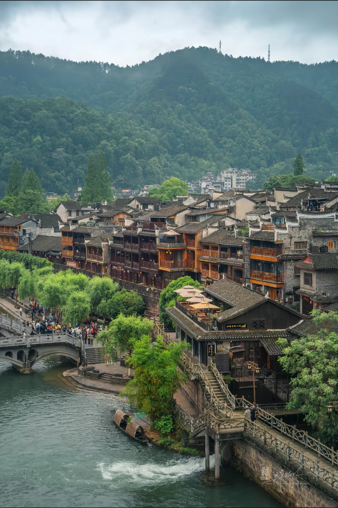
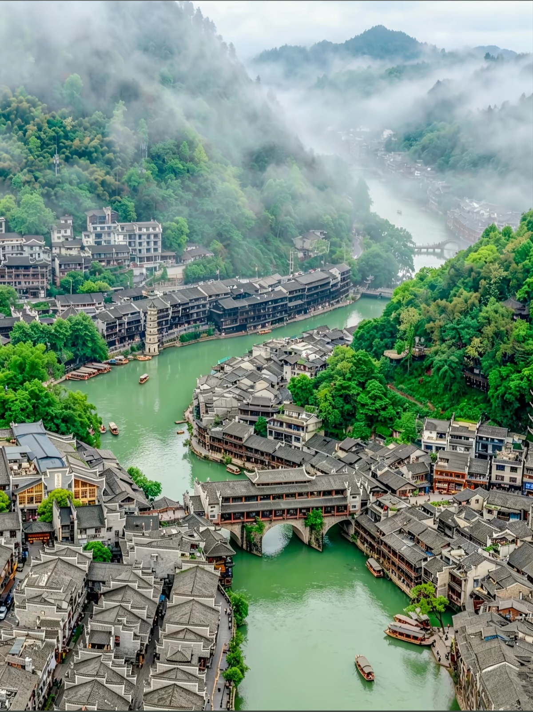
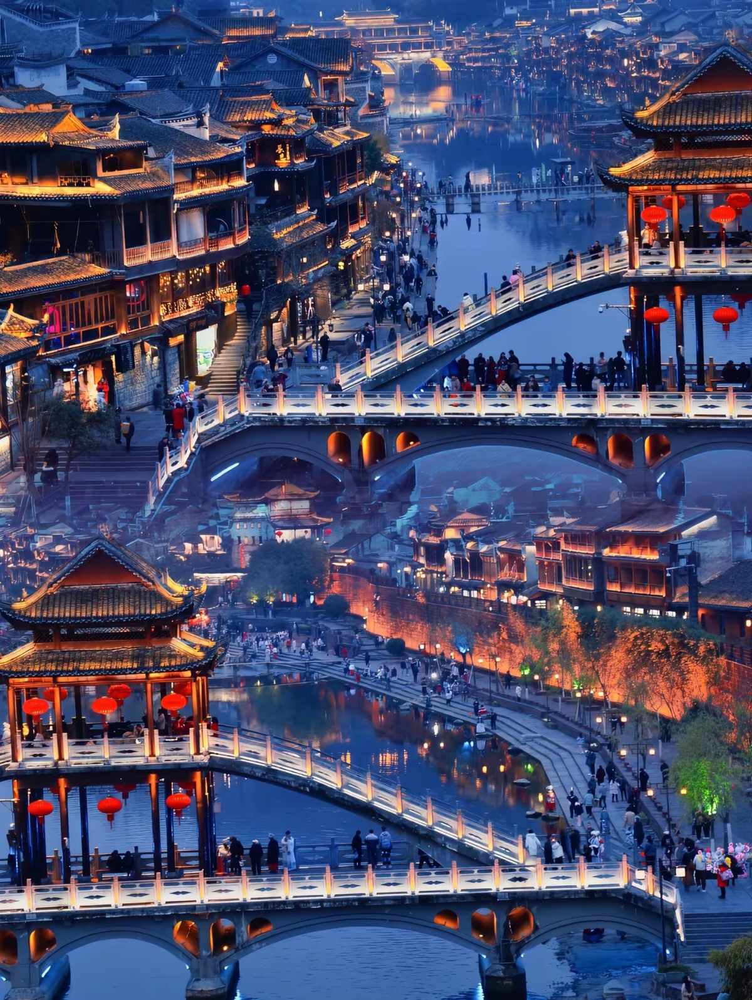

Fenghuang (Phoenix) Ancient Town is a beautifully preserved town in western Hunan Province, famous for its stilted wooden houses along the Tuojiang River, Miao and Tujia ethnic minority culture, and literary heritage. The town has over 300 years of history and was home to famous Chinese writer Shen Congwen, whose novels brought Fenghuang to national attention. Today it's a popular destination for its atmospheric riverside scenery, traditional architecture, vibrant nightlife, and unique ethnic culture. The town is especially magical at night when the stilted houses are illuminated with red lanterns.






To Jishou: Train from Changsha (4h, ¥80) or Zhangjiajie (2h, ¥40). Then bus to Fenghuang (1.5h, ¥30). Most common route.
From Changsha: Direct bus (6-7h, ¥150). From Zhangjiajie: Bus (4h, ¥80). From Jishou: Bus (1.5h, ¥30).
Nearest Airport: Tongren Fenghuang Airport (30km away). Flights from Changsha, Guiyang. Taxi to town ¥80-100.
Walking only: Ancient town is pedestrian-only. Very compact - everything within 15 min walk. River boats available for tours (¥50-80).
Route: Rainbow Bridge → Shen Congwen's Former Residence → East Gate → Riverside walk → Night market
Duration: 3-4 hours
Best for: First-time visitors, culture lovers
Morning: Ancient town walking tour, museums
Afternoon: River boat ride, Visit nearby Miao villages
Evening: Night market, Riverside bars, Photography
Day 1: Ancient town + Miao village visit + evening river cruise
Day 2: Southern Great Wall (15km away) + local market + departure
Best Time: Early morning (mist on river) and evening (lanterns lit)
Best Spots: Rainbow Bridge, Riverside stilted houses, Night market
Tips: Bring tripod for night shots
Location: Along Tuojiang River
Specialty: Sour fish, Smoked pork, Local river fish
Hours: 10:00 AM - 11:00 PM
Location: Middle of ancient town
Specialty: Home-style Hunan dishes, Tofu
Hours: 11:00 AM - 10:00 PM
Location: Near East Gate and riverside
Specialty: Rice tofu, Sticky rice, Grilled fish skewers
Hours: 6:00 PM - 12:00 AM
Location: Along Tuojiang River
Specialty: Cocktails, Coffee, Live music (evening)
Hours: 2:00 PM - 2:00 AM
Location: Along Tuojiang River
Features: Traditional stilted houses, River views, Balconies
Note: Most atmospheric choice; can be noisy at night
Location: Inside ancient town
Features: Traditional decor, Courtyard, Personal service
Distance to River: 2-5 min walk
Location: Various in ancient town
Features: Dorm beds, Social atmosphere, Travel info
Best for: Budget travelers, backpackers
Location: Outside ancient town
Features: Modern amenities, Parking, Quieter
Distance to Ancient Town: 10-15 min walk